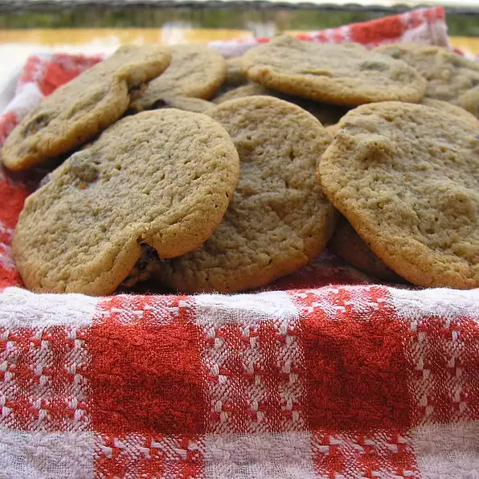

Mom's Cookies Recipe

Mom's Classic Cookies
This is one of my mom's favorite cookiesthat she made quite often. Mom had lots of family and friends over and they always had these cookies on hand with tea.
Ingredients
- ½ cup butter, softened
- ½ cup shortening
- 1 ½ cups packed brown sugar
- 3 eggs
- 2 cups all-purpose flour
- 1 teaspoon baking powder
- ½ teaspoon baking soda
- ½ teaspoon salt
- 1 teaspoon ground cinnamon
Steps
- Preheat oven to 375 degrees F (190 degrees C).
- Cream together the shortening and the butter. Add the brown sugar and cream until light and fluffy. Beat in the eggs until well blended.
- Sift the flour, baking powder, baking soda, salt and cinnamon over the creamed mixture
- Drop cookies onto ungreased baking sheets and bake at 375 degrees F (190 degrees C) for 8 to 10 minutes or until golden.
Next: Mom's Simple Scones
Main Page